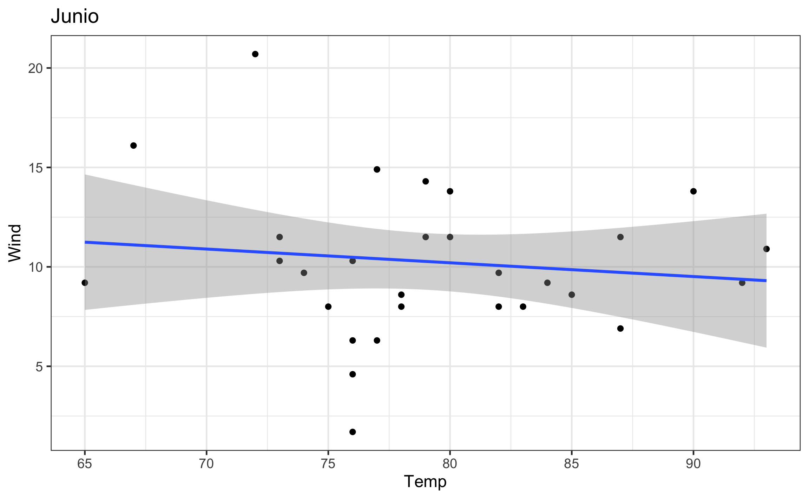
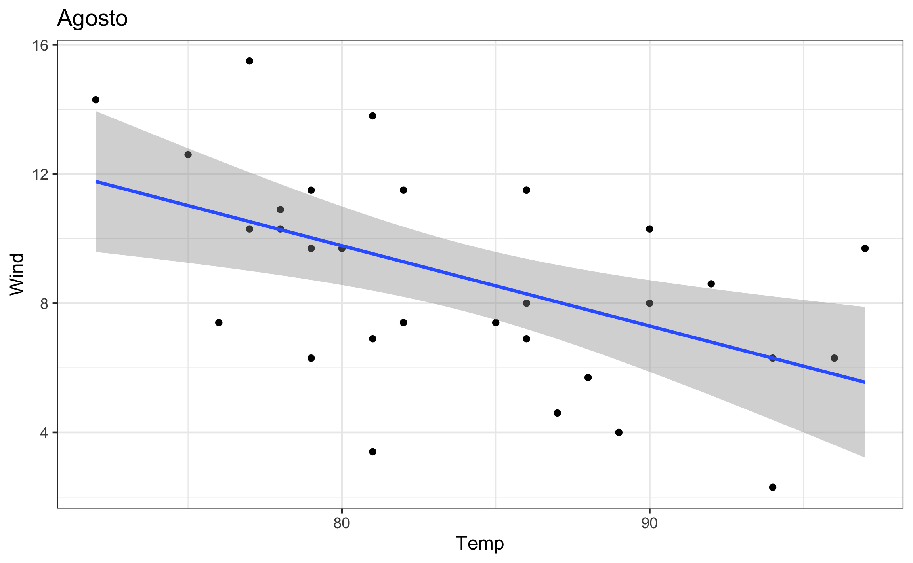
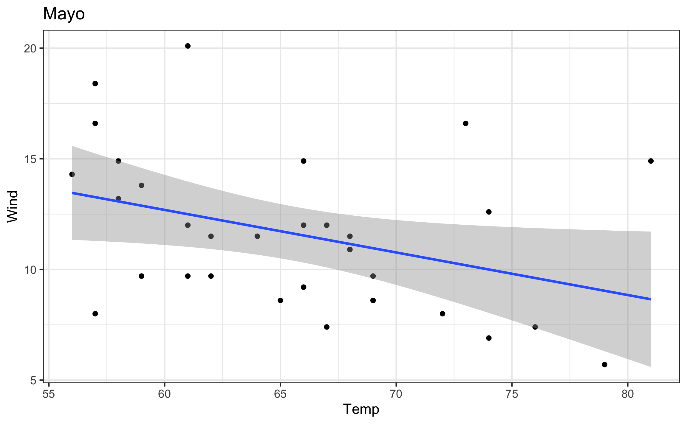
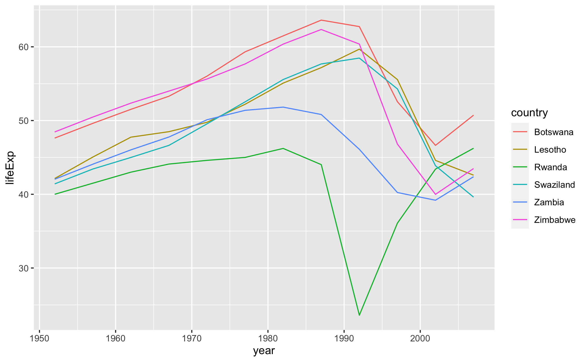

Capitulo 5 Iteracion con purrr
En este capitulo se muestra como iterar funciones sobre diferentes objetos (vectores, tablas, listas). La idea de las iteraciones es ser mas eficiente a la hora de realizar calculos repetitivos. Se va a introducir al paquete purrr (Henry & Wickham, 2019) que brinda funciones para realizar diferentes tareas que requieren iterar sobre 1 o mas objetos.
En este capitulo se van a utilizar los siguientes paquetes:
library(gapminder)
library(fs)
library(rio)
library(tidymodels)
library(tidyverse)Asi mismo se vuelven a importar y manipular los datos con que se venia trabajando:
data("airquality")
airq = airquality %>%
mutate(Month = factor(Month,
levels = 5:9,
labels = c("Mayo", "Junio", "Julio",
"Agosto", "Setiembre")),
Sensation = case_when(Temp < 60 ~ 'Cold',
Temp < 70 ~ 'Cool',
Temp < 85 ~ 'Warm',
T ~ 'Hot') %>%
as.factor())5.1 Iterando sobre un objeto
La funcion basica de purrr es map(.x, .f, ...), donde .x es el objeto sobre el cual iterar (vector, tabla o lista), .f es la funcion o tarea a realizar durante la iteracion, y ... son argumentos extra dependiendo de la funcion. Esta funcion (map) siempre va a resultar en una lista; existen variantes de esta que son especificas para cuando se conoce cual va a ser el tipo de dato de salida. Por ejemplo, map_dbl se usa cuando el resultado de la funcion es un numero con decimales.
En el siguiente bloque de codigo se generan dos listas ficticias, ambas de 7 elementos, donde la primera corresponde con notas de estudiantes en pruebas durante un semestre, y la segunda son puntos extra para cada estudiante.
set.seed(4101)
n = 8
minima = 60
maxima = 100
exams <- list(
student1 = round(runif(n, minima, maxima)),
student2 = round(runif(n, minima, maxima)),
student3 = round(runif(n, minima, maxima)),
student4 = round(runif(n, minima, maxima)),
student5 = round(runif(n, minima, maxima)),
student6 = round(runif(n, minima, maxima)),
student7 = round(runif(n, minima, maxima))
)
extra_credit <- list(10, 5, 0, 15, 5, 0, 5)Usando los datos generados anteriormente, se muestra la funcionabilidad de varias de las funciones map_*. Estas funciones se pueden usar con el pipe operator (%>%).
El primer ejemplo muestra como con map se obtiene una lista de la nota media de los examnes por estudiante. Se itera sobre la lista ‘exams’, y a cada elemento de la lista (en este caso vectores) se le calcula la media.
map(exams, mean) # media## $student1
## [1] 79.25
##
## $student2
## [1] 75.875
##
## $student3
## [1] 80.25
##
## $student4
## [1] 85.125
##
## $student5
## [1] 84.875
##
## $student6
## [1] 79.625
##
## $student7
## [1] 81.875En el segundo ejemplo se utiliza el pipe (%>%) y una de las variantes de map (map_dbl), ya que lo que se va a calcular (nota maxima) se sabe es un numero con decimales.
exams %>% map_dbl(max) # nota maxima## student1 student2 student3 student4 student5 student6 student7
## 100 96 91 99 95 93 100En el tercer ejemplo se itera sobre una tabla, donde en este caso la iteracion es sobre las columnas. Recordemos que una tabla es una lista donde las columnas son los elementos de la lista. Lo que se quiere hacer es obtener el valor de la media para cada columna de la tabla ‘airq’. Al hacer esto encontramos dos situaciones; la primera que dice que hay un argumento no numerico o logico (en este caso se refiere a las columnas ‘Month’ y ‘Sensation’ que son factor), por lo que al ser un factor no se le puede aplicar una funcion numerica; la segunda que hay valores ‘NA’ aun en columnas que son numericas (‘Ozone’, ‘Solar.R’), esto porque en esas columnas hay NAs y por defecto la funcion mean no los remueve a la hora de hacer el calculo.
airq %>% map_dbl(mean)## Warning in mean.default(.x[[i]], ...): argument is not numeric or logical:
## returning NA
## Warning in mean.default(.x[[i]], ...): argument is not numeric or logical:
## returning NA## Ozone Solar.R Wind Temp Month Day Sensation
## NA NA 9.957516 77.882353 NA 15.803922 NAPor lo anterior, hay dos soluciones dependiendo de lo que se quiera resolver. Si solo se quiere lidiar con los ‘NA’, se puede agregar el argumento na.rm = T de la funcion mean, pero las columnas de tipo factor van a seguir estando presentes y dar ‘NA’ como resultado.
airq %>% map_dbl(mean, na.rm = T)## Warning in mean.default(.x[[i]], ...): argument is not numeric or logical:
## returning NA
## Warning in mean.default(.x[[i]], ...): argument is not numeric or logical:
## returning NA## Ozone Solar.R Wind Temp Month Day Sensation
## 42.129310 185.931507 9.957516 77.882353 NA 15.803922 NALa solucion mas adecuada en este caso es primero seleccionar las columnas de tipo numerico (select_if(is.numeric)) y a estas aplicarle el calculo de la media removiendo los ‘NA’. Esta ultima forma de aplicar la funcion es, a mi parecer, las mas practica y clara. Se tiene que escribir la funcion empezando con el simbolo ~, esto le dice a purrr que lo que va a estar a al derecha va a ser una funcion, seguido de este simbolo se escribe la funcion de manera normal, con la excepcion de que en el lugar donde iria tipicamente el vector se pone .x, para decirle a purrr donde incrustar los elementos del objeto sobre el cual se esta iterando.
airq %>%
select_if(is.numeric) %>%
map_dbl(~ mean(.x, na.rm = T))## Ozone Solar.R Wind Temp Day
## 42.129310 185.931507 9.957516 77.882353 15.8039225.2 Iterando sobre dos objetos
Los ejemplos anteriores se estaba iterando unicamente sobre un objeto. Para iterar sobre dos objetos (que tienen que tener la misma cantidad de elementos), existen las funciones map2_*, que tienen al estructura map2(.x, .y, .f, ...), donde .x es el primer objeto, .y es el segundo objeto, y .f es al funcion a utilizar sobre los dos objetos. Un ejemplo de esto es calcular la nota final de los estudiantes por medio de la media de los examenes y agregarle el credito extra.
exams %>%
map2_dbl(extra_credit, ~ mean(.x) + .y)## student1 student2 student3 student4 student5 student6 student7
## 89.250 80.875 80.250 100.125 89.875 79.625 86.8755.3 Leyendo archivos y combinandolos
Un caso tipico donde se desea iterar es leer varios archivos de texto que tienen el mismo formato y como combinarlos en una sola tabla para posterior manipulacion. En este caso se usa la funcion dir_ls del paquete fs (Hester & Wickham, 2019), donde se define la carpeta donde se encuentran los archivos (path) y con glob se define un patron en el nombre de los archivos (en este caso todos los archivos empiezan con ‘datos_’).
archivos <- dir_ls(path = 'data', glob = "*datos_*")
archivos## data/datos_cuarto_grado.csv data/datos_quinto_grado.csv
## data/datos_tercer_grado.csvfile_info(archivos)## # A tibble: 3 x 18
## path type size permissions modification_time user group device_id
## <fs::path> <fct> <fs:> <fs::perms> <dttm> <chr> <chr> <dbl>
## 1 data/dato… file 1.79K rw-r--r-- 2019-07-01 16:52:58 maxi… staff 16777220
## 2 data/dato… file 1.84K rw-r--r-- 2019-07-01 16:52:58 maxi… staff 16777220
## 3 data/dato… file 1.81K rw-r--r-- 2019-07-01 16:52:58 maxi… staff 16777220
## # … with 10 more variables: hard_links <dbl>, special_device_id <dbl>,
## # inode <dbl>, block_size <dbl>, blocks <dbl>, flags <int>, generation <dbl>,
## # access_time <dttm>, change_time <dttm>, birth_time <dttm>Una vez se tiene le objeto con los nombres de los archivos (‘archivos’), se puede proceder a realizar la iteracion. Como estamos importando archivos de texto (.csv) usamos la funcion import del paquete rio.
Primeramente podemos generar una lista donde iteramos sobre el objeto ‘archivos’ e importamos cada uno, para posteriormente “pegar” uno tras otro con la funcion bind_rows de dplyr.
map(archivos, import) %>%
bind_rows()## # A tibble: 144 x 5
## fecha nombre matematica ingles matricula
## <chr> <chr> <int> <int> <int>
## 1 1/1/2015 Hernandez, Rodrigo 90 60 100
## 2 1/2/2015 Hernandez, Rodrigo 85 70 100
## 3 1/3/2015 Hernandez, Rodrigo 70 80 100
## 4 1/4/2015 Hernandez, Rodrigo 75 85 100
## 5 1/5/2015 Hernandez, Rodrigo 70 90 100
## 6 1/6/2015 Hernandez, Rodrigo 66 90 100
## 7 1/1/2015 Sanchez, Juan 60 80 102
## 8 1/2/2015 Sanchez, Juan 70 80 102
## 9 1/3/2015 Sanchez, Juan 80 90 102
## 10 1/4/2015 Sanchez, Juan 85 85 102
## # … with 134 more rowsCon lo anterior logramos generar una tabla con todos los datos pero no sabemos cuales datos correponden con cual archivo (y consecuentemente con que nivel). Para remediar lo anterior la funcion bind_rows tiene un argumento .id, al cual se le pasa el nombre de la columna que se quiere agregar mostrando el nombre del archivo al cual pertence cada observacion.
archivos %>%
map_dfr(import, .id = "archivo")## # A tibble: 144 x 6
## archivo fecha nombre matematica ingles matricula
## <chr> <chr> <chr> <int> <int> <int>
## 1 data/datos_cuarto_grado… 1/1/2015 Hernandez, Rod… 90 60 100
## 2 data/datos_cuarto_grado… 1/2/2015 Hernandez, Rod… 85 70 100
## 3 data/datos_cuarto_grado… 1/3/2015 Hernandez, Rod… 70 80 100
## 4 data/datos_cuarto_grado… 1/4/2015 Hernandez, Rod… 75 85 100
## 5 data/datos_cuarto_grado… 1/5/2015 Hernandez, Rod… 70 90 100
## 6 data/datos_cuarto_grado… 1/6/2015 Hernandez, Rod… 66 90 100
## 7 data/datos_cuarto_grado… 1/1/2015 Sanchez, Juan 60 80 102
## 8 data/datos_cuarto_grado… 1/2/2015 Sanchez, Juan 70 80 102
## 9 data/datos_cuarto_grado… 1/3/2015 Sanchez, Juan 80 90 102
## 10 data/datos_cuarto_grado… 1/4/2015 Sanchez, Juan 85 85 102
## # … with 134 more rowsLa siguiente situacion que podemos encontrar es que el nombre del archivo (o cualquier otra columna de la tabla) tiene mas informacion de la necesaria, por lo que hay que separar los contenidos de la columna. Para esto usamos separate de tidyr para separar la columna en varias. En el caso de la columna ‘archivo’ podemos esperar tres columnas si especificamos el separador (sep = '_'), pero hay columnas que no ofrecen ninguna informacion (de las 3, la 1 y la 3, la 2 es la que tiene el nombre del nivel); para descartar estas columnas a la hora de separarlas se puede incluir NA en la posicion de las columnas que se desea descartar.
archivos %>%
map_dfr(import, .id = "archivo") %>%
separate(archivo, into = letters[1:3], sep = '_')## # A tibble: 144 x 8
## a b c fecha nombre matematica ingles matricula
## <chr> <chr> <chr> <chr> <chr> <int> <int> <int>
## 1 data/dat… cuarto grado.c… 1/1/20… Hernandez, Rod… 90 60 100
## 2 data/dat… cuarto grado.c… 1/2/20… Hernandez, Rod… 85 70 100
## 3 data/dat… cuarto grado.c… 1/3/20… Hernandez, Rod… 70 80 100
## 4 data/dat… cuarto grado.c… 1/4/20… Hernandez, Rod… 75 85 100
## 5 data/dat… cuarto grado.c… 1/5/20… Hernandez, Rod… 70 90 100
## 6 data/dat… cuarto grado.c… 1/6/20… Hernandez, Rod… 66 90 100
## 7 data/dat… cuarto grado.c… 1/1/20… Sanchez, Juan 60 80 102
## 8 data/dat… cuarto grado.c… 1/2/20… Sanchez, Juan 70 80 102
## 9 data/dat… cuarto grado.c… 1/3/20… Sanchez, Juan 80 90 102
## 10 data/dat… cuarto grado.c… 1/4/20… Sanchez, Juan 85 85 102
## # … with 134 more rowsarchivos %>%
map_dfr(import, .id = "archivo") %>%
separate(archivo, into = c(NA, 'grado', NA), sep = '_')## # A tibble: 144 x 6
## grado fecha nombre matematica ingles matricula
## <chr> <chr> <chr> <int> <int> <int>
## 1 cuarto 1/1/2015 Hernandez, Rodrigo 90 60 100
## 2 cuarto 1/2/2015 Hernandez, Rodrigo 85 70 100
## 3 cuarto 1/3/2015 Hernandez, Rodrigo 70 80 100
## 4 cuarto 1/4/2015 Hernandez, Rodrigo 75 85 100
## 5 cuarto 1/5/2015 Hernandez, Rodrigo 70 90 100
## 6 cuarto 1/6/2015 Hernandez, Rodrigo 66 90 100
## 7 cuarto 1/1/2015 Sanchez, Juan 60 80 102
## 8 cuarto 1/2/2015 Sanchez, Juan 70 80 102
## 9 cuarto 1/3/2015 Sanchez, Juan 80 90 102
## 10 cuarto 1/4/2015 Sanchez, Juan 85 85 102
## # … with 134 more rowsPor ultimo, en este caso tambien se puede separar la columna ‘nombre’ en ‘apellido’ y ‘nombre’, usando los mismos principios anteriores.
archivos %>%
map_dfr(import, .id = "archivo") %>%
separate(archivo, into = c(NA, 'grado', NA), sep = '_') %>%
separate(nombre, into = c('apellido', 'nombre'), sep = ', ')## # A tibble: 144 x 7
## grado fecha apellido nombre matematica ingles matricula
## <chr> <chr> <chr> <chr> <int> <int> <int>
## 1 cuarto 1/1/2015 Hernandez Rodrigo 90 60 100
## 2 cuarto 1/2/2015 Hernandez Rodrigo 85 70 100
## 3 cuarto 1/3/2015 Hernandez Rodrigo 70 80 100
## 4 cuarto 1/4/2015 Hernandez Rodrigo 75 85 100
## 5 cuarto 1/5/2015 Hernandez Rodrigo 70 90 100
## 6 cuarto 1/6/2015 Hernandez Rodrigo 66 90 100
## 7 cuarto 1/1/2015 Sanchez Juan 60 80 102
## 8 cuarto 1/2/2015 Sanchez Juan 70 80 102
## 9 cuarto 1/3/2015 Sanchez Juan 80 90 102
## 10 cuarto 1/4/2015 Sanchez Juan 85 85 102
## # … with 134 more rows5.4 Datos anidados, caso 1
Como se habia mencionado en la Seccion 3.12 del Capitulo Funcionamiento avanzado de R, una de las ventajas de los tibbles es que permiten tener columnas tipo lista, las cuales son muy utilies para iterar y realizar calculos de manera expedita.
En este caso 1 se trabaja con los datos de ‘airq’, que era la tabla modificada de ‘airquality’. Un caso tipico de datos anidados es el agrupar la tabla de acuerdo a una variable categorica y aplicar la funcion nest de tidyr. Esto genera una columna ‘data’, del tipo lista, donde se almacena una tabla para cada nivel de la variable agrupadora.
airq_nest = airq %>%
group_by(Month) %>%
nest()El poder de los datos anidados es la combinacion de mutate (dplyr) para generar nuevas columnas, y de las funciones map (purrr) para iterar sobre una columan tipo lista. De forma general esta combinacion se plasma de la siguiente forma: mutate(nueva_columna = map(columna_lista, ~ .f(.x))), donde ‘nueva_columna’ es el nombre de la columna a crear, ‘columna_lista’ es el nombre de la columna tipo lista sobre la cual se va a iterar, y ~ .f(.x) es la funcion o secuencia de funciones a realizar sobre cada elemento (.x) de la ‘columna_lista’.
Aplicano lo mencionado anteriormente sobre la tabla anidada ‘airq_nest’ se tienen los siguientes pasos, en diferentes mutate:
mod = map(data, ~lm(Wind ~ Temp, data = .x)): Crea una nueva columna ‘mod’, que va a ser el resultado de un modelo lineal para cada mes (iterando sobre ‘data’), en funcion del viento (‘Wind’) y la temperatura (‘Temp’). La funcion para modelos lineales eslmy el primer argumento es laformulaque lleva la estructuray ~ x, el argumentodatase pone de forma explicita y aqui es donde se le indica los elementos sobre los cuales iterar (.x). El resultado es una lista, de ahi que se usaramapy no una de sus versiones.slope = map_dbl(mod, ~tidy(.) %>% filter(term == 'Temp') %>% pull(estimate)): Crea una nueva columna ‘slope’, que va a almacenar la pendiente del modelo lineal (‘mod’) anteriormente calculado, como se sabe que es un numero se usamap_dbl.r2 = map_dbl(mod, ~glance(.) %>% pull(r.squared)): Crea una nueva columna ‘r2’, donde se va a almacenar el valor del coeficiente de determinacion (\(R^2\)), como se sabe que es un numero se usamap_dbl.plot = map2(data,Month, ~ggplot(.x, aes(Temp, Wind)) + geom_point() + geom_smooth(method = 'lm') + labs(title = .y) + theme_bw(base_size = 12)): Crea una nueva columna, donde se va a almacenar el grafico de dispersion para cada mes, y se le agrega un titulo para saber a que mes corresponde. En este caso se esta iterando sobre dos objetos, por lo que se usamap2: la columna tipo lista donde estan los datos a graficar (‘data’), y la columna tipo factor (vector) donde esta la variable agrupadora (‘Month’) para poder poner el titulo correspondiente.
airq_nest = airq_nest %>%
mutate(mod = map(data, ~lm(Wind ~ Temp, data = .x))) %>%
mutate(slope = map_dbl(mod, ~tidy(.) %>%
filter(term == 'Temp') %>%
pull(estimate)),
r2 = map_dbl(mod, ~glance(.) %>% pull(r.squared)),
plot = map2(data,Month, ~ggplot(.x, aes(Temp, Wind)) +
geom_point() +
geom_smooth(method = 'lm') +
labs(title = .y) +
theme_bw(base_size = 12)))
airq_nest## # A tibble: 5 x 6
## Month data mod slope r2 plot
## <fct> <list> <list> <dbl> <dbl> <list>
## 1 Mayo <tibble [31 × 6]> <lm> -0.192 0.139 <gg>
## 2 Junio <tibble [30 × 6]> <lm> -0.0691 0.0146 <gg>
## 3 Julio <tibble [31 × 6]> <lm> -0.215 0.0932 <gg>
## 4 Agosto <tibble [31 × 6]> <lm> -0.249 0.258 <gg>
## 5 Setiembre <tibble [30 × 6]> <lm> -0.236 0.325 <gg>5.4.1 Efectos secundarios
En algunas ocasiones el resultado de una iteracion no corresponde con un vector, tabla o lista, sino que puede ser la creacion de graficos o el exportar objetos (lo que se conoce en ingles como ’’side effect); para estos casos existe la funcion walk y sus variantes.
En el primer ejemplo se quiere imprimir cada grafico en la columna ‘plot’, por lo que se itera sobre la columna deseada, y se llama a la funcion ~ print(.) para que despliegue cada uno de los elementos.
walk(airq_nest$plot, ~print(.))## `geom_smooth()` using formula 'y ~ x'
## `geom_smooth()` using formula 'y ~ x'
## `geom_smooth()` using formula 'y ~ x'## `geom_smooth()` using formula 'y ~ x'
## `geom_smooth()` using formula 'y ~ x'
Un resultado similar se puede obtener usando pull, donde se jala como vector los elementos de la columna deseada.
airq_nest %>% pull(plot)## [[1]]## `geom_smooth()` using formula 'y ~ x'
##
## [[2]]## `geom_smooth()` using formula 'y ~ x'
##
## [[3]]## `geom_smooth()` using formula 'y ~ x'
##
## [[4]]## `geom_smooth()` using formula 'y ~ x'
##
## [[5]]## `geom_smooth()` using formula 'y ~ x'El ultimo ejemplo hace uso de walk2 ya que se desea iterar sobre dos objetos: la columna de graficos (‘plot’) y la columna agrupadora (‘Month’). Lo que se desea realizar es exportar cada grafico por separado, de ahi la necesidad de usar ambos objetos, el grafico a exportar y la variable agrupadora para incluirla en el nombre del archivo. Para esto ultimo se usa la funcion str_glue de stringr que lo que ahce es crear una linea de texto donde se pueden ingresar variables usando {variable}. En el ejemplo especificamente, se guarda cada grafico en la carpeta ‘figs’, con el nombre ‘regresion_{.y}.png’, donde ‘{.y}’ corresponde con el segundo objeto a iterar, en este caso el mes (‘Month’).
walk2(airq_nest$plot,
airq_nest$Month,
~ggsave(filename = str_glue("figs/regresion_{.y}.png"),
plot = .x, dpi = 300,
width = 7, height = 4, units = "in",
type = "cairo"))## `geom_smooth()` using formula 'y ~ x'
## `geom_smooth()` using formula 'y ~ x'
## `geom_smooth()` using formula 'y ~ x'
## `geom_smooth()` using formula 'y ~ x'
## `geom_smooth()` using formula 'y ~ x'5.5 Datos anidados, caso 2
En este caso 2 se trabaja con los datos de ‘gapminder’, donde se agrupa por pais (‘country’), y se crea una tabla para cada pais. Este caso es bastante ilustrativo del poder de los tibbles y la iteracion, ya que la tabla anidada cuenta con 142 filas (1 por pais), y si se quisiera realizar una tarea por pais a pie, seria muy tedioso y poco eficiente.
gap_nest = gapminder %>%
group_by(country) %>%
nest()De manera similar al caso 1, se genera un modelo lineal para cada pais en funcion de la expectativa de vida (‘lifeExp’) por anho (‘year’), y adicionalmente se calcula el coeficiente de determinacion (\(R^2\)) para cada modelo lineal.
gap_nest = gap_nest %>%
mutate(mod = map(data, ~lm(lifeExp ~ year, data = .x))) %>%
mutate(r2 = map_dbl(mod, ~glance(.) %>% pull(r.squared)))
gap_nest## # A tibble: 142 x 4
## country data mod r2
## <fct> <list> <list> <dbl>
## 1 Afghanistan <tibble [12 × 5]> <lm> 0.948
## 2 Albania <tibble [12 × 5]> <lm> 0.911
## 3 Algeria <tibble [12 × 5]> <lm> 0.985
## 4 Angola <tibble [12 × 5]> <lm> 0.888
## 5 Argentina <tibble [12 × 5]> <lm> 0.996
## 6 Australia <tibble [12 × 5]> <lm> 0.980
## 7 Austria <tibble [12 × 5]> <lm> 0.992
## 8 Bahrain <tibble [12 × 5]> <lm> 0.967
## 9 Bangladesh <tibble [12 × 5]> <lm> 0.989
## 10 Belgium <tibble [12 × 5]> <lm> 0.995
## # … with 132 more rowsCon los datos anteriores se pueden filtrar los paises que hayan tenido un \(R^2\) por debajo de 0.25, lo que seria indicio de un comportamiento no lineal, lo que podria estar asociado a problemas de desarrollo en esos paises. Para poder graficar los datos es necesario desanidarlos (unnest) para volver a contar con las columnas a como estaban en la tabla original, pero ahora con las columnas calculadas en las iteraciones.
gap_nest %>%
# ungroup() %>%
# arrange(r2) %>%
# slice(1:10) %>%
filter(r2 < .25) %>%
unnest(data) %>%
ggplot() +
geom_line(aes(year, lifeExp, col = country, group = country))
Referencias
Henry, L., & Wickham, H. (2019). purrr: Functional Programming Tools. Recuperado a partir de https://CRAN.R-project.org/package=purrr
Hester, J., & Wickham, H. (2019). fs: Cross-Platform File System Operations Based on ’libuv’. Recuperado a partir de https://CRAN.R-project.org/package=fs